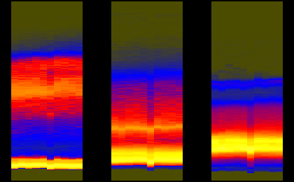
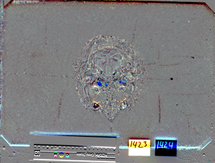
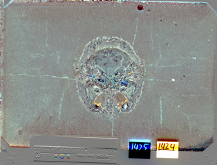
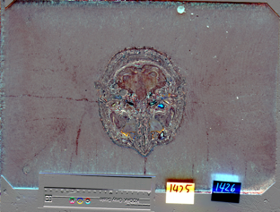
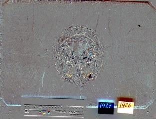
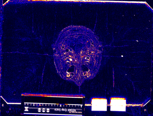
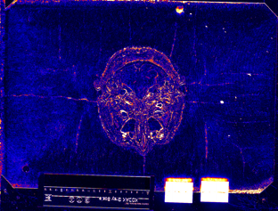
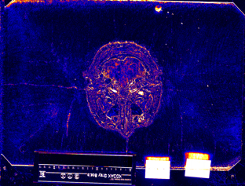
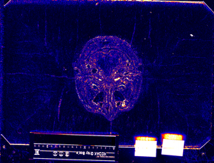

|

| ||||
| teem | / | nrrd | / |
Visible Female |
Image Differences 3 |
Slice indices and names are:
417: avf1140a.raw.Z 418: avf1140b.raw.Z 419: avf1140c.raw.Z 420: avf1141a.raw.Z 421: avf1141b.raw.Z
unu join -i histax{R,G,B}.ppm -a 3 | unu crop -min 0 414 0 0 -max M m+9 M M \
| histaxzoom | topng doc/hist3.png
zcat data/avf1140a.raw.Z | sliceprep -o 0.ppm
zcat data/avf1140b.raw.Z | sliceprep -o 1.ppm
zcat data/avf1140c.raw.Z | sliceprep -o 2.ppm
zcat data/avf1141a.raw.Z | sliceprep -o 3.ppm
zcat data/avf1141b.raw.Z | sliceprep -o 4.ppm
unu 2op - {0,1}.ppm -t int | cquant | shrink | topng doc/diff3CA.png
unu 2op - {1,2}.ppm -t int | cquant | shrink | topng doc/diff3CB.png
unu 2op - {2,3}.ppm -t int | cquant | shrink | topng doc/diff3CC.png
unu 2op - {3,4}.ppm -t int | cquant | shrink | topng doc/diff3CD.png
unu 2op - {0,1}.ppm -t int | nquant | shrink | topng doc/diff3NA.png
unu 2op - {1,2}.ppm -t int | nquant | shrink | topng doc/diff3NB.png
unu 2op - {2,3}.ppm -t int | nquant | shrink | topng doc/diff3NC.png
unu 2op - {3,4}.ppm -t int | nquant | shrink | topng doc/diff3ND.png
|  | |||
| hist3.png: Segments of the red, green, and blue axis histograms, for Z slices 414 to 423. | |||
|  |  |  |  |
| diff3CA.png | diff3CB.png | diff3CC.png | diff3CD.png |
|  |  |  |  |
| diff3NA.png | diff3NB.png | diff3NC.png | diff3ND.png |